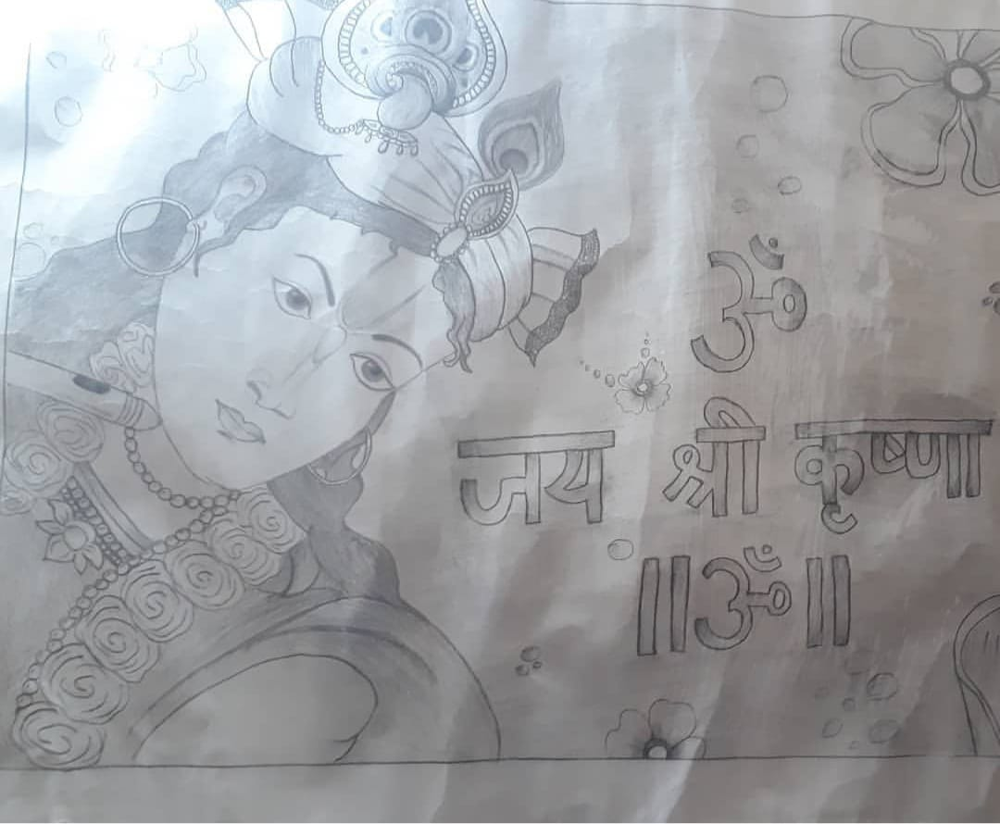
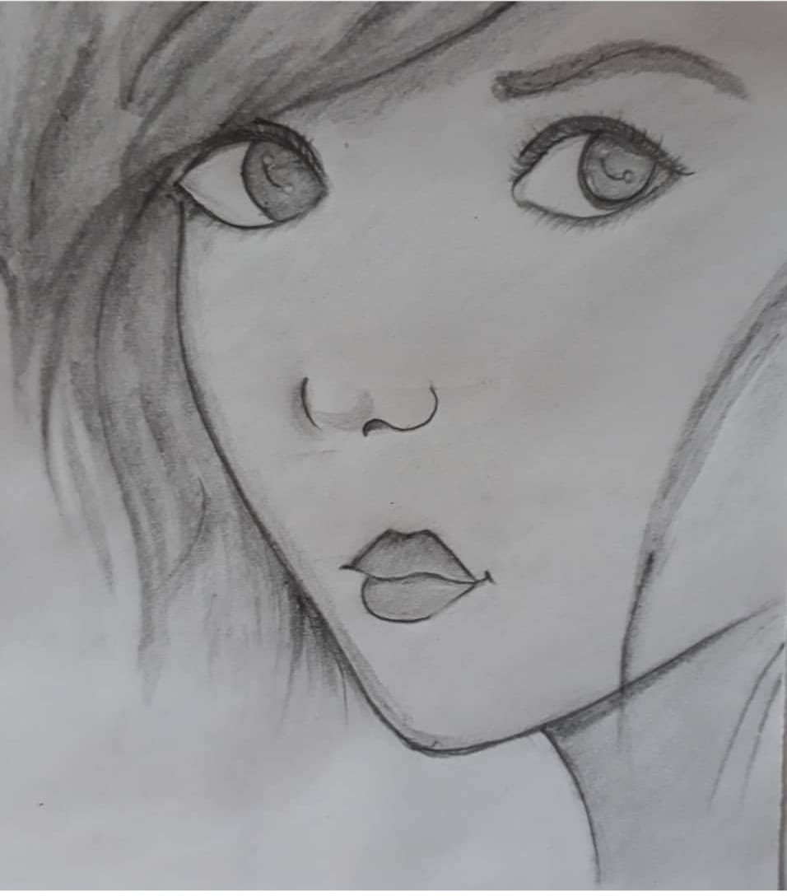
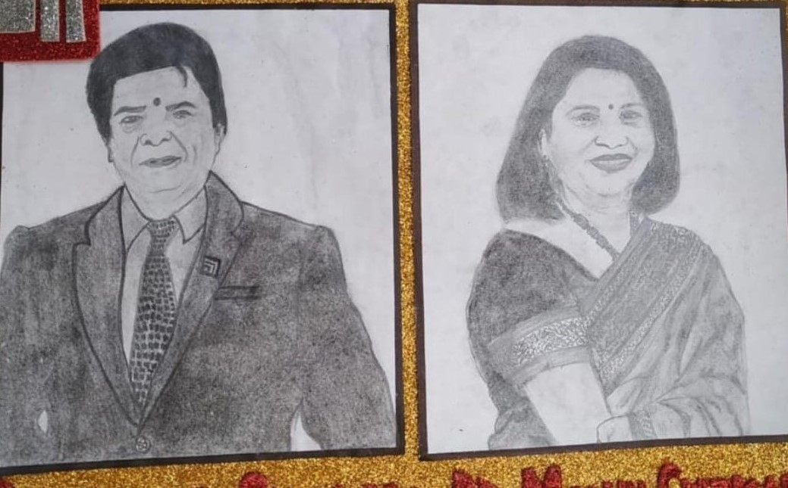
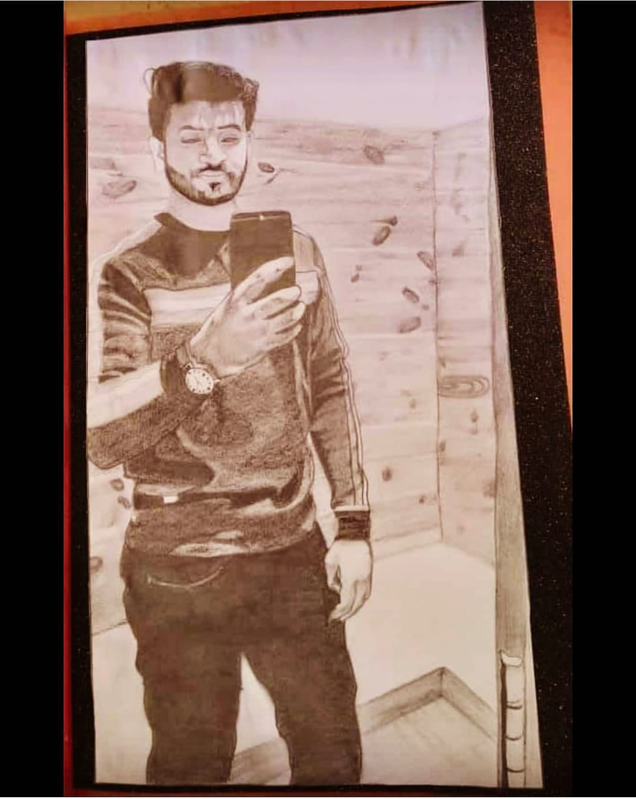

Now lets start with your shading exercises
By shading you can make your drawing more impactful. Or you can say without shading your drawing are kind of incomplete.
Let's start with some simple designs. Use HB drawing pencils for the below pictures..All the Best :)

Try Some More beautiful shaded pictures

So now you are quite familier with shading...So Lets Start Something New
Now we are going to try some portraits
Instructions:use HB pencil for normal areas.
use H pencil for starting rough drawing.
use 4B,6B,8B,10B,12B pencils according to the requirment of your
use charcol pencil for better meshing of pencil in quite large area.
use graphite pencil for bright smaller sides of your drawings.
If you are a beginner then start doing rough sketch or face outlinings by tracing for perfect shape and try to shade it better and after trying 4-5 portraits you can get the idea to make it quite perfectly.

Now these kind of portraits as well with background.

For more pictures or for any doubt comment below